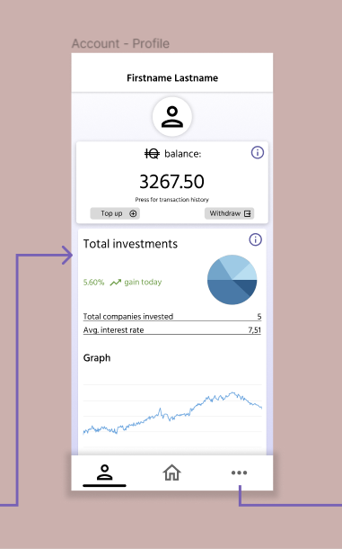
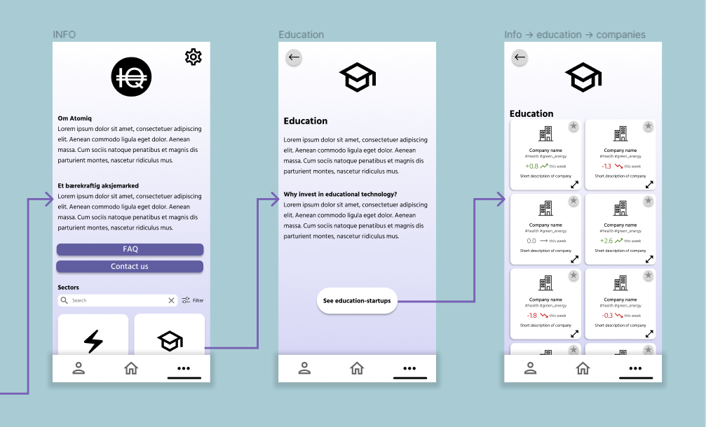
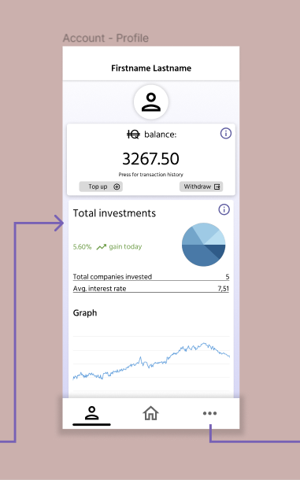
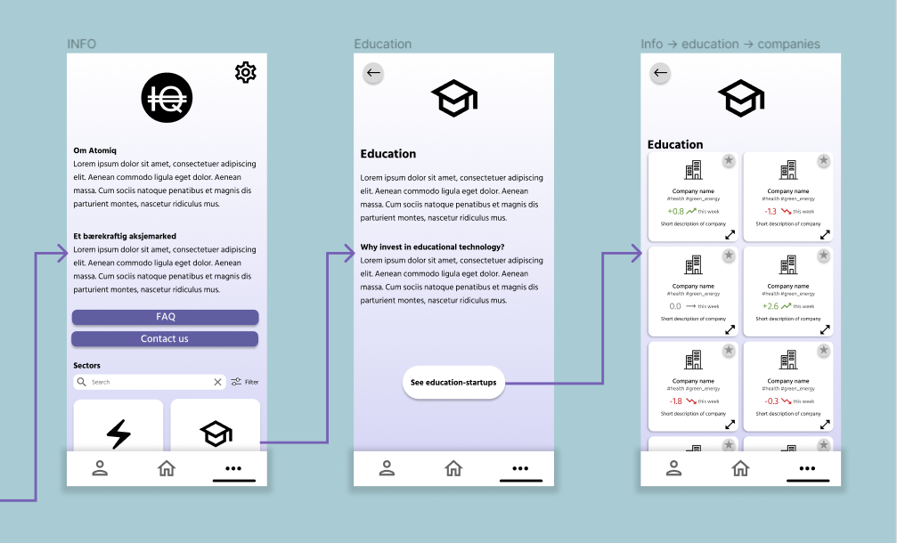

Interaction layer for crypto investment application
Gained experience
Cooperating with professional team
Methodology: Transformative Design
Methods: future scenarios, experimental design, Tarot Cards of Tech
Grew highly comfortable using Figma
Project description
In the class of IN3010: Transformative Design, with a focus on social sustainability, my design team partnered with the established core team from AtomIQ to create a wireframe of the interaction design layer of their upcoming investment app.
This mockup was not focused on aesthetics, but rather how we could
contribute our expertise within HCI and creativity as students to
create an application that
encourages and educates new users for the sake of
democracy within the field of finance.
Project case:
"To conceptualize a new age stocks and trading platform, which
emphasizes democratization, accessibility and sustainability."
"To democratize and make investment available to everyone and inform
about, simplify and reduce risk as well as promote sustainable
investment solutions rather than financial ones."
Problems
- The team of AtomIQ currently do not have designs for their upcoming mobile and desktop platforms.
- Start-up tech companies get little funding for big projects that could potentially lead to revolutionary technology for both social and nature sustainability.
- Several popular crypto trading apps today use a form of cryptomining that is considered detrimental for the environment.
- Based on our findings after qualitative research: Crypto trading apps today are often considered confusing, overwhelming, and even scary.
Project objectives
- Find ways to make the interface of a crypto trading app more comprehensible and welcoming.
- Find ways to educate and inform new users about typical trading terminology.
- Find ways to make the process of investing easier for new users.
- Do NOT push the user to make investment decisions; only educate and inform.
These objectives are only within the scope of the project timeline.
The goals in the long-run are for this interface solution to make the process of investing less intimidating, to encourage financial democracy and equality within society.
We hope to give more people who perhaps did not start off with knowledge in the field, a way to explore the topic of crypto investment and make their own decisions after gaining more knowledge.
Following this, start-up tech companies may find more investment opportunities, and it can lead to a future with more opportunities for technology advancement.
 


